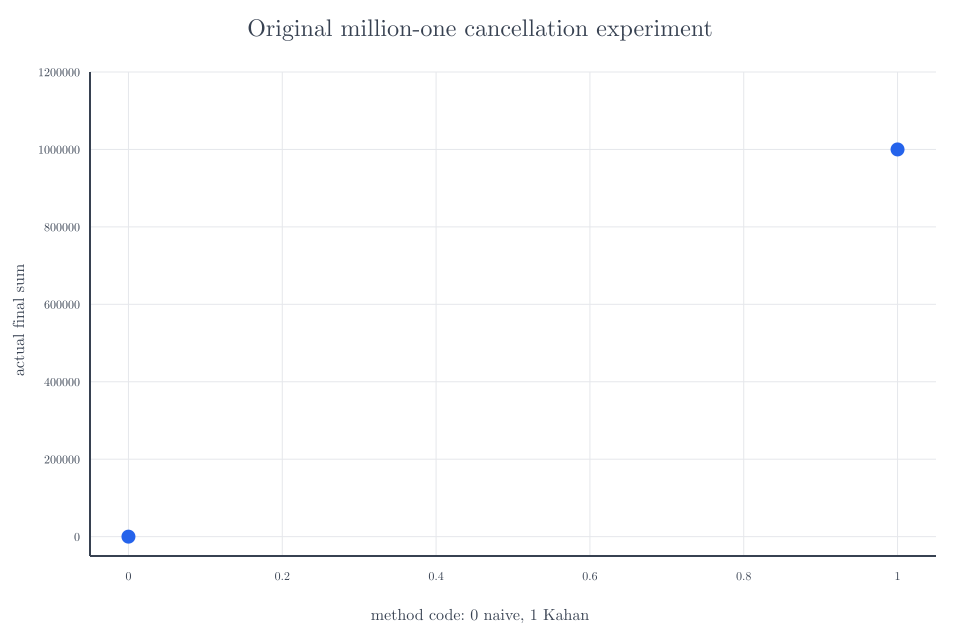
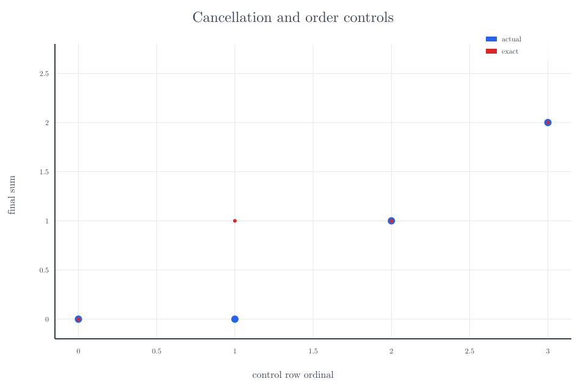
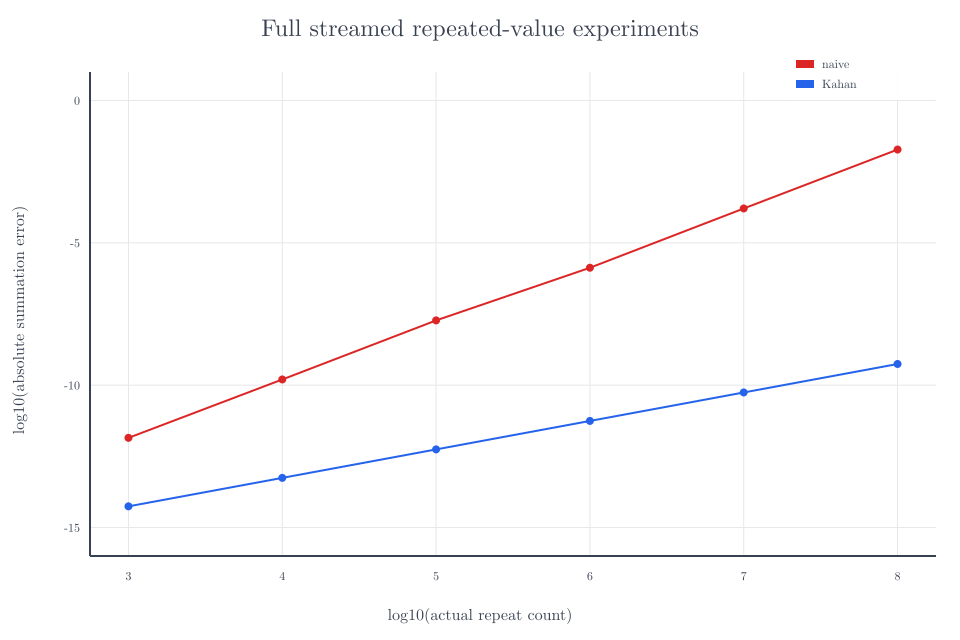

Kahan summation: inspect the rounded correction
Abstract
Kahan summation carries a rounded correction into the next addition. It often recovers contributions lost by a naive sum, but it is neither exact nor order-independent. We inspect actual arithmetic on a tiny cancellation example, retain the original million-one stress test and all repeated-0.1 sizes through one hundred million, and distinguish represented-input summation error from decimal representation error. Streaming repeats preserve every update without allocating an enormous repeated vector.
Two ones can make a difference
Start with 1e16, add one twice, then subtract 1e16. The first one disappears from the running sum but leaves a correction; the second update uses that correction. Every table value below comes from the producing native stream, with no prefix replay. The diagram shows actual running sums and corrections at each step.
#include <dm/dm.hpp>
int main() {
std::filesystem::create_directories("build");
const auto t = dm::algorithms::kahan_trace({1e16, 1, 1, -1e16});
std::print("| step | x | sum before | correction before | adjusted | new sum | new correction |\n| ---: " "| ---: | ---: | ---: | ---: | ---: | ---: |\n");
dm::graphics::Diagram d;
dm::graphics::DiagramNodeStyle style;
style.width = 6.;
for (const auto &e : t.steps) {
std::print("| {} | {:.17g} | {:.17g} | {:.17g} | {:.17g} | {:.17g} | {:.17g} |\n",
e.index, e.value, e.sum_before, e.correction_before,
e.adjusted, e.total, e.correction_after);
d.node(std::to_string(e.index), {8. * e.index, 0},
std::format("Step {} sum {:.17g}\ncorrection {:.3g}", e.index,
e.total, e.correction_after), style);
if (e.index)
d.edge(std::to_string(e.index - 1), std::to_string(e.index));
}
d.save_svg("build/kahan_correction.svg");
}| step | x | sum before | correction before | adjusted | new sum | new correction |
|---|---|---|---|---|---|---|
| 0 | 10000000000000000 | 0 | 0 | 10000000000000000 | 10000000000000000 | 0 |
| 1 | 1 | 10000000000000000 | 0 | 1 | 10000000000000000 | -1 |
| 2 | 1 | 10000000000000000 | -1 | 2 | 10000000000000002 | 0 |
| 3 | -10000000000000000 | 10000000000000002 | 0 | -10000000000000000 | 2 | 0 |
Derive the actual update, without claiming exact lost bits
The recurrence is
Every displayed arithmetic operation rounds in double. The correction estimates a local rounding effect; it is not an exact residual expansion. Unsafe fast-math reassociation can turn the intended correction into zero, so the operation order must be preserved. A finite-sum relative-error statement also depends on cancellation conditioning, often expressed by sum of absolute inputs divided by absolute exact sum. Near a zero exact total that ratio can be enormous or undefined. The old unconditional n-independent relative-accuracy claim was therefore too strong.
Retain one million ones between cancelling large values
The original stress test is 1e16, one million actual additions of one, then −1e16. Its represented inputs are integers and their exact real sum is one million. The native stream performs every original update with the same recurrence; streaming changes storage, not the sequence or algorithm. A naive loop provides the baseline.
#include <dm/dm.hpp>
int main() {
std::filesystem::create_directories("build");
dm::algorithms::KahanAccumulator a;
(void) a.add(1e16);
a.add_repeated(1, 1000000);
(void) a.add(-1e16);
double naive = 1e16;
for (std::size_t i = 0; i < 1000000; ++i)
naive += 1;
naive -= 1e16;
std::print("| method | actual sum | exact integer target | absolute error |\n| --- | ---: | ---: | ---: " "|\n| naive | {:.17g} | 1000000 | {:.17g} |\n| Kahan | {:.17g} | 1000000 | {:.17g} |\n",
naive, std::fabs(naive - 1000000), a.sum(),
std::fabs(a.sum() - 1000000));
std::print("\nThe native stream completed {} actual updates.\n", a.count());
auto p = dm::graphics::RPlot::create();
p.points({0, 1}, {naive, a.sum()}, "", {37, 99, 235}, 7).title(
"Original million-one cancellation experiment").x_label(
"method code: 0 naive, 1 Kahan").y_label("actual final sum").y_limits(
-50000, 1200000).save_svg("build/kahan_original.svg");
}| method | actual sum | exact integer target | absolute error |
|---|---|---|---|
| naive | 0 | 1000000 | 1000000 |
| Kahan | 1000000 | 1000000 | 0 |
The native stream completed 1000002 actual updates.

Compensation can still lose a term
For [1e16,1,−1e16], the exact represented-input sum is one, yet Kahan can return zero: adjusting the final huge term rounds away the pending unit. Permuting to [1e16,−1e16,1] returns one. This is a limitation of the method, not evidence that its correction has been omitted. Empty input returns zero. Nonfinite values propagate by ordinary IEEE arithmetic; after an infinity, the compensation can become NaN.
#include <dm/dm.hpp>
int main() {
std::filesystem::create_directories("build");
std::print("| control | actual Kahan sum | exact finite target |\n| --- | ---: | ---: |\n");
std::vector<double> x, y;
const std::vector<std::pair<const char *, std::vector<double>> > cases = {
{"empty", {}}, {"lost singleton", {1e16, 1, -1e16}},
{"permuted", {1e16, -1e16, 1}},
{"two recovered ones", {1e16, 1, 1, -1e16}}
};
const double targets[] = {0, 1, 1, 2};
for (std::size_t i = 0; i < cases.size(); ++i) {
const auto value = dm::algorithms::kahan_sum(cases[i].second);
std::print("| {} | {:.17g} | {} |\n", cases[i].first, value, targets[i]);
x.push_back(i);
y.push_back(value);
}
bool capped = false;
try {
(void) dm::algorithms::kahan_trace({1, 2, 3}, 2);
} catch (const std::length_error &) {
capped = true;
}
if (!capped)
throw std::runtime_error("complete quota");
std::print("\nA two-record ceiling rejects the complete three-value trace.\n");
auto p = dm::graphics::RPlot::create();
p.points(x, y, "actual", {37, 99, 235}, 6).points(x, {0, 1, 1, 2}, "exact",
{220, 38, 38}, 3).title(
"Cancellation and order controls").x_label("control row ordinal").y_label("final sum").y_limits(-.2, 2.8).save_svg("build/kahan_controls.svg");
}| control | actual Kahan sum | exact finite target |
|---|---|---|
| empty | 0 | 0 |
| lost singleton | 0 | 1 |
| permuted | 1 | 1 |
| two recovered ones | 2 | 2 |
A two-record ceiling rejects the complete three-value trace.

Retain every repeated-0.1 size through one hundred million
The original sizes are 1,000 through 100,000,000 by factors of ten. Each size performs all updates without a repeated-vector allocation. The input value is binary64 0.1, whose exact represented value differs from decimal one tenth. To measure summation error against the exact product of that represented input and integer n, the program uses a single fused multiply-add of (−n,value,sum). For these finite controls it gives the correctly rounded error against the exact product, rather than subtracting the already rounded double product n*value. Independent exact rational verification passed for all six repeat counts. Logarithms use positive measured errors; no artificial floor is substituted for zero.
#include <dm/dm.hpp>
int main() {
std::filesystem::create_directories("build");
std::vector<double> x, naive_error, kahan_error;
std::print("| actual repeats | naive sum | Kahan sum | naive absolute summation error | Kahan absolute " "summation error |\n| ---: | ---: | ---: | ---: | ---: |\n");
for (std::size_t n = 1000; n <= 100000000; n *= 10) {
dm::algorithms::KahanAccumulator a;
a.add_repeated(.1, n);
double naive = 0;
for (std::size_t i = 0; i < n; ++i)
naive += .1;
const double en =
std::fabs(std::fma(-double(n), .1, naive)), ek =
std::fabs(std::fma(-double(n), .1, a.sum()));
if (!(en > 0 && ek > 0))
throw std::runtime_error("positive error for logarithmic diagnostic");
std::print("| {} | {:.17g} | {:.17g} | {:.12e} | {:.12e} |\n", n, naive,
a.sum(), en, ek);
x.push_back(std::log10(n));
naive_error.push_back(std::log10(en));
kahan_error.push_back(std::log10(ek));
}
auto p = dm::graphics::RPlot::create();
p.line(x, naive_error, "naive", {220, 38, 38}, 2).points(x, naive_error, "",
{220, 38, 38}, 4).line(x, kahan_error, "Kahan", {37, 99, 235}, 2).points(x, kahan_error, "", {37, 99, 235}, 4).title("Full streamed repeated-value experiments").x_label("log10(actual repeat count)").y_label("log10(absolute summation error)").y_limits(-16, 1).save_svg("build/kahan_repeats.svg");
}| actual repeats | naive sum | Kahan sum | naive absolute summation error | Kahan absolute summation error |
|---|---|---|---|---|
| 1000 | 99.999999999998593 | 100 | 1.412425731928e-12 | 5.551115123126e-15 |
| 10000 | 1000.0000000001588 | 1000 | 1.587650011459e-10 | 5.551115123126e-14 |
| 100000 | 10000.000000018848 | 10000 | 1.884781308803e-08 | 5.551115123126e-13 |
| 1000000 | 100000.00000133288 | 100000 | 1.332877124227e-06 | 5.551115123126e-12 |
| 10000000 | 999999.99983897537 | 1000000 | 1.610246809243e-04 | 5.551115123126e-11 |
| 100000000 | 9999999.9811294507 | 10000000 | 1.887054983158e-02 | 5.551115123126e-10 |

The scalar API and stream use linear arithmetic and constant storage with no shared state or input mutation. Stream repeat admission checks count overflow before all updates. Full tracing additionally owns one actual arithmetic record per input, admits the complete count before allocation, and defaults to a million records with zero disabling the optional ceiling. These limits count records, excluding vector capacity, byte counts and peak RAM. Failure exposes no partial trace. No external dataset is needed to study these controlled arithmetic effects.
Independent rounded-operation checks verified 1,000 arrays and 30,000 actual
update records. Python Fraction references verified all six full repeat
experiments through 100,000,000 updates against the exact represented-input
product. Another 1,000 arrays matched the frozen original recurrence exactly;
native tests cover nonfinite propagation, complete history ceilings, streaming
and count-overflow admission. The shared ten-report build passed 131 native
tests, 38 directly instrumented address/undefined-behaviour sanitizer tests, 89
compiled public examples, documentation coverage for all 388 scoped definitions
and ten representative clangd hovers. All four complete C++ report programs
executed successfully and their native figures were visually reviewed. Batch
receipts are retained under build/mepml-conversion/batch-174-183/.
Reference
William Kahan (1965), “Pracniques: Further Remarks on Reducing Truncation Errors”, Communications of the ACM8(1),40, doi:10.1145/363707.363723. The present report retains the specific sequential compensation recurrence while separating its practical improvements from exactness and conditioning claims.